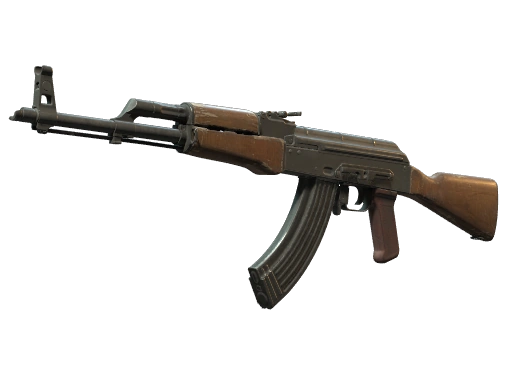
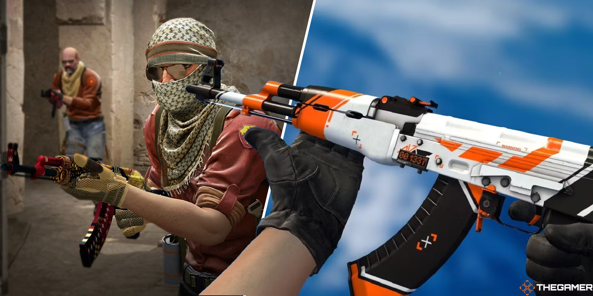

AK-47 |
 |
The M4A1-S is a silenced assault rifle available exclusively to the Counter-Terrorist side in CS . Known for its accuracy and low recoil, the M4A1-S is an excellent choice for players who prefer precision over power. The built-in suppressor not only reduces the weapon's noise but also minimizes its muzzle flash, making it easier to stay undetected. With a lower magazine capacity compared to its counterpart, the M4A4, the M4A1-S requires careful ammo management. It excels in medium to long-range engagements, offering consistent damage output and a manageable recoil pattern, making it a reliable choice for defensive playstyles.

Back to List